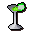

Blurberry Bar
Inventory config
blurberrybarRun by  Barman. Open in knowledge graph →
Barman. Open in knowledge graph →
Located in: Grand Tree, Swamp
Stock
| Item | Stock | Value | Sells for |
|---|---|---|---|
| 10 | 30 gp | 30 gp | |
| 10 | 30 gp | 30 gp | |
| 10 | 30 gp | 30 gp | |
| 10 | 30 gp | 30 gp | |
| Pineapple punch | 10 | 30 gp | 30 gp |
 Sgg | 10 | 30 gp | 30 gp |
| 10 | 30 gp | 30 gp |
Shop sells at 100.0% of item value and buys at 25.0%.